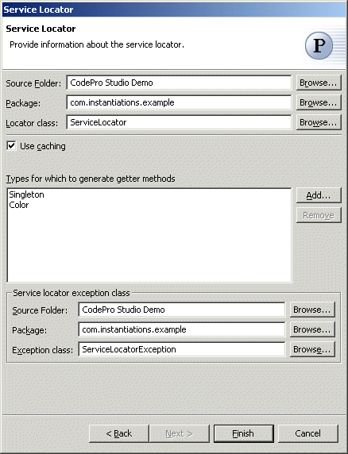

Service Locator Pattern
The  Service Locator
pattern centralizes distributed service object lookups, provides a centralized
point of control, and may act as a cache that eliminates redundant lookups. It
also encapsulates any vendor-specific features of the lookup process.
Service Locator
pattern centralizes distributed service object lookups, provides a centralized
point of control, and may act as a cache that eliminates redundant lookups. It
also encapsulates any vendor-specific features of the lookup process.
Wizard
Applicability
Additional Resources
Wizard
| Option | Description | Default |
| Source folder | Enter a source folder for the locator class. Either type a valid source folder path or click Browse to select a source folder via a dialog. | The source folder of the element that was selected when the wizard was started. |
| Package | Enter a package to contain the locator class. Either type a valid package name or click Browse to select a package via a dialog. | The package of the element that was selected when the wizard was started. |
| Locator class | Enter a name for the locator class. | <ServiceLocator> |
| Use caching | Determines whether the locator is a singleton class that caches the objects it looks up | <true> |
| Types for which to generate get<type> methods | Click Add to choose types for which to generate methods with signature "<type> get<type>(String)" for looking up objects of that type. | <blank> |
| Source folder | Enter a source folder for the exception class. Either type a valid source folder path or click Browse to select a source folder via a dialog. | The source folder of the element that was selected when the wizard was started. |
| Package | Enter a package to contain the exception class. Either type a valid package name or click Browse to select a package via a dialog. | The package of the element that was selected when the wizard was started. |
| Exception class | Enter a name for the exception class. | <ServiceLocatorException> |
Applicability
Use the Service Locator pattern when- Lookup and creation of service components could be complex and may be used repeatedly in multiple clients in the application.
- Initial context creation and service object lookups are frequently required and resource-intensive, and may impact application performance.